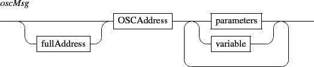
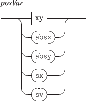

Interaction messages are user defined messages associated to events and triggered when these events occur. These messages accept variables as message arguments.
The general form of the message is:
The associated OSC message is any valid OSC message (not restricted to the Interlude message set), with an extended address scheme, supporting IP addresses or host names and udp port number to be specified as OSC addresses prefix. The message parameters are any valid OSC type or variables (see section 14.3).

